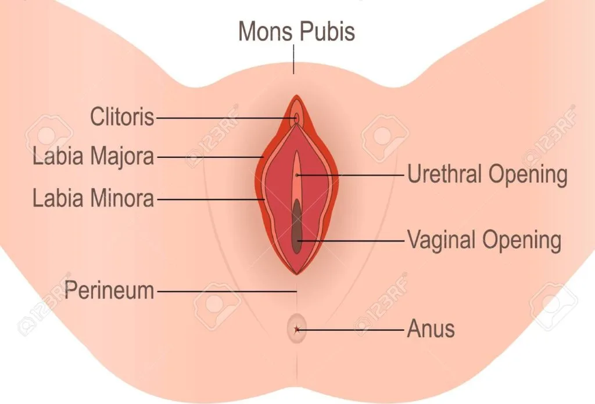
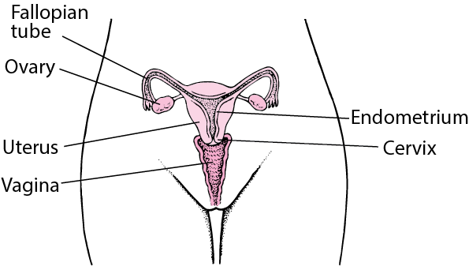
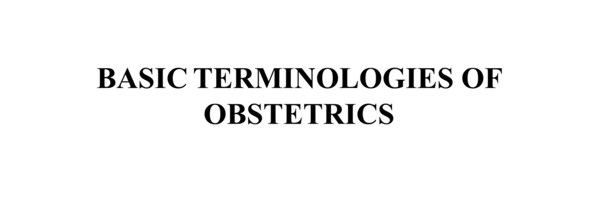

Expanded Nursing Uganda Explanation
Introduction to Gynaecology should be understood beyond a short definition. Link the concept to patient history, focused assessment, common risks, nursing priorities, documentation and evaluation of outcomes.
01 INTRODUCTION TO GYNAECOLOGY
Gynaecology is a branch of medicine which deals with diseases of the female reproductive systems.
02 OVERVIEW OF ANATOMY AND PHYSIOLOGY OF THE FEMALE REPRODUCTIVE SYSTEM
The female reproductive system is composed of the external genitalia , internal genitalia and the mammary glands.
The female external genitalia , also known as the vulva , is a complex structure comprising several distinct parts, each with its unique functions and characteristics:
Mons Pubis: The mons pubis is a rounded, fatty region located over the pubic bone. It becomes covered with hair after puberty and acts as a cushion during sexual intercourse. ****
Labia Majora : These are two prominent, fatty skin folds that extend from the mons pubis to the perineum. They protect the delicate structures within and typically become thinner with age or after childbirth.
Labia Minora : These are smaller, thinner, and more pigmented skin folds situated inside the labia majora. They encircle the vaginal and urethral openings and contain numerous sweat and oil glands . The labia minora are composed of erectile tissue, which becomes engorged during sexual arousal, and they are highly sensitive to touch.
Clitoris : This is a highly sensitive and erectile organ located at the top of the vulva, partially hidden beneath the upper junction of the labia minora. It is analogous to the male penis and is a central focus of sexual response, becoming swollen with blood and sensitive to stimulation during sexual arousal.
Vestibule : The vestibule is a space or cleft enclosed by the labia minora. It contains the openings to the urethra (the tube that allows urine to exit the body) and the vagina.
Vaginal Opening (Introitus) : This is the entrance to the vagina , located within the vestibule. In many women, this opening is partially closed by a membrane called the hymen.
Functions of the Vulva
- Protection : The labia majora act as a protective barrier for the internal reproductive organs, helping to shield them from injury and infection.
- Sexual Arousal : The clitoris and the highly sensitive nerve endings in the labia minora play a crucial role in sexual arousal and pleasure.
- Reproduction : The vaginal opening allows for sexual intercourse and serves as the birth canal during childbirth.
- Urination : The urethral opening within the vestibule allows for the passage of urine from the bladder to the outside of the body.
- Secretion : The vulva contains numerous sweat and oil glands that secrete fluids to keep the area moist and lubricated.
- Childbirth : During childbirth, the vulva and vaginal opening stretch to accommodate the passage of the baby.
The internal reproductive system comprises the vagina , cervix , uterus , fallopian tubes , and ovaries , all situated within the pelvic region.
Vagina : The vagina is a fibro-muscular tube extending from the vulva’s vestibule to the cervix. Approximately 10 cm in length, it can extend further during childbirth. The vaginal mucous membranes secrete fluids that cleanse and maintain an acidic environment. The hymen may cover the vaginal opening, typically breaking during the first penetrative sexual encounter.
Functions of the Vagina:
- Allows the exit of blood and fluids during menstruation.
- Serves as a passage for sperm to the fallopian tubes.
- Receives the penis and sperm during sexual intercourse.
- Provides the pathway for the fetus during vaginal delivery.
Cervix : The cervix, the most inferior part of the uterus, extends into the vaginal canal. It connects the uterus to the vagina, facilitating the passage of menstrual contents, sperm, and the baby during childbirth.
The cervix has two main portions:
- The ectocervix (visible during gynecologic examination) and
- The endocervix (a tunnel through the cervix leading to the uterus).
During Childbirth : The cervix undergoes changes, becoming soft and dilating to accommodate the fetus. Cervical dilation is indicative of labor initiation.
Uterus : A pear-shaped organ, the uterus lies posterior-superior to the bladder and anterior to the rectum in the female pelvis. It consists of the fundus (top), body (middle), and cervix (lower). The uterus is composed of the endometrium (inner mucosal lining), myometrium (smooth muscular middle layer), and perimetrium.
Functions of the Uterus:
- Responsible for menstruation as the endometrium sheds during each monthly period.
- The endometrial cavity accommodates the fetus during pregnancy.
- Uterine muscles facilitate contractions during labor, enabling the expulsion of the infant through the birth canal.
Fallopian Tubes : Also known as oviducts or salpinges, fallopian tubes measure approximately 10 cm and extend from the uterine fundus to the pelvic wall. They consist of the infundibulum (with fimbriae near the ovary), ampullary region, isthmus (narrowest part linking to the uterus), and interstitial part traversing the uterine musculature.
Functions of the Fallopian Tubes:
- Facilitate sperm movement using tubal cilia and transport the ovum from the ovaries to the uterus.
- Provide a site for fertilization and guide the zygote to the uterus for implantation.
- Supply nutrients to the fertilized ovum during its journey to the uterus.
Ovaries : Two glands on each side of the uterus, ovaries are attached to the uterus by the ovarian ligament and the pelvic wall by the suspensory ligament. Covered by the mesovarium (part of the broad ligament), the ovary’s size varies with age and menstrual cycle stage.
Ovarian Functions:
- Produce ova and female sex hormones—predominantly estrogen and progesterone.
- Oestrogen promotes the development of secondary sex characteristics, growth, and maturity of reproductive organs.
- Progesterone prepares the endometrium for pregnancy, aids in placental development, breast enlargement during pregnancy, and inhibits ovum production during gestation.
- Together, estrogen and progesterone regulate menstrual cycle changes in the endometrium.
03 COMMON TERMS IN GYNAECOLOGY
Menarche : Menarche refers to the first menstrual period and is considered the first sign of puberty and may be the first sign of the possibility of fertility. The average age of menarche usually ranges from 12-13 years.
Precocious puberty : This is the onset of menstruation before the age of 8 years in girls or 9 years in boys. This is an abnormality which requires investigation.
Menorrhagia : Menorrhagia is an excessive amount or prolonged bleeding during the woman’s menstrual period. Blood loss is usually greater than 80 ml per menstrual cycle. It is common during adolescence and perimenopausal. Menorrhagia can be caused by abnormal blood clotting, disruption of normal hormonal regulation of periods, or disorders of the endometrium.
Oligomenorhoea : Oligomenorhoea defines the occurrence of very light or infrequent menstrual periods usually at intervals of more than 35 days.
Post coital bleeding : Post coital bleeding is defined as vaginal bleeding that occurs after sexual intercourse.
04 COMMON CAUSES OF GYNECOLOGICAL ISSUES
1. Congenital Abnormalities:
- Absence of Vagina, Ovaries, Uterus, or Uterine Division.
- Structural anomalies present at birth impacting reproductive organs.
2. Environmental Factors :
- Physical and Mental Well-being: Stress and anxiety may contribute to menstrual irregularities or the absence of menstruation.
- Lifestyle Choices: Unhealthy habits, sedentary lifestyle, or exposure to environmental toxins can affect reproductive health.
3. Pathological Agents :
- Infections: Entry of pathogenic microorganisms can result in various infections.
- Vaginitis
- Vulvitis
- Other inflammatory conditions impacting the reproductive system.
4. Trauma :
- Instrumental Trauma: Injuries caused by medical instruments during procedures, potentially leading to complications such as fistula.
- Accidental Trauma: Physical injuries impacting the genital organs due to accidents or trauma.
5. Hormonal Imbalances :
- Endocrine Disorders: Conditions affecting hormone production and regulation.
- Polycystic Ovary Syndrome (PCOS): Disruption of hormonal balance affecting ovarian function.
6. Reproductive System Disorders :
- Endometriosis: Growth of uterine tissue outside the uterus, causing pain and fertility issues.
- Fibroids: Non-cancerous growths in the uterus affecting fertility and causing discomfort.
- Pelvic Inflammatory Disease (PID): Infections affecting the reproductive organs.
7. Menstrual Disorders :
- Dysmenorrhea: Painful menstruation.
- Menorrhagia: Heavy menstrual bleeding.
- Amenorrhea: Absence of menstruation.
8. Gynecological Cancers :
- Cervical, ovarian, uterine, or other reproductive cancers.
- Regular screenings and early detection are crucial for effective management.
9. Pregnancy-Related Complications:
- Ectopic Pregnancy: Implantation outside the uterus.
- Gestational Trophoblastic Disease (GTD): Abnormal growth of cells inside a woman’s uterus.
1O. Pelvic Floor Disorders :
- Prolapse: Descent of pelvic organs.
- Incontinence: Loss of bladder or bowel control.
05 HISTORY, PHYSICAL EXAMINATION AND INVESTIGATIONS IN GYNAECOLOGY
Click Here
06 Nursing Uganda Clinical Lens
Use Introduction to Gynaecology as a practical nursing topic, not only a memorized definition. Start with normal structure and function, then connect it to assessment findings and disease.
- What to understand first: define introduction to gynaecology, identify the normal or expected pattern, then explain what changes when the patient is unwell.
- Why it matters in care: the nurse must recognize risk early, explain findings clearly, document accurately and know when to escalate.
- How to revise it: connect each point to assessment, nursing diagnosis or care problem, intervention, rationale and evaluation.
07 Assessment Guide
- Relevant inspection, palpation, movement, auscultation, vital signs or neurological checks.
- Normal findings, abnormal findings and what each abnormality may indicate.
- Patient history, risk factors and how the body system affects other systems.
08 Nursing Priorities, Rationales and Outcomes
- Use anatomy to explain symptoms and guide focused assessment.
- Recognize findings that need urgent escalation.
- Teach the patient using simple body-system language.
The rationale for these priorities is patient safety: nursing actions should prevent deterioration, reduce discomfort, support recovery and create clear evidence for the next caregiver.
- Expected outcome: The learner can explain normal function, identify abnormal signs and connect them to nursing action.
09 Patient Teaching and Revision Check
- Explain introduction to gynaecology in simple language the patient or caregiver can repeat back.
- Teach warning signs, medicine or follow-up instructions, hygiene or lifestyle points where relevant.
- For exams, prepare a short answer using: definition, causes or risk factors, signs, assessment, management, complications and prevention.
- For ward practice, document baseline findings, actions taken, patient response and the plan for review.
Illustrations and Diagrams (9)





1 more diagram available — open the lesson for full illustrations.
Related Video Lectures
Watch nursing lecture videos on YouTube for this topic. Opens in a new tab.
Watch on YouTubeExternal link: YouTube may use its own cookies and terms. Nursing Uganda is not affiliated with YouTube.